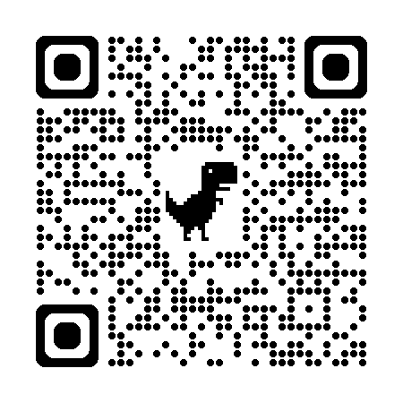

Contact
想為你的團隊設計一堂真正用得上的 AI 課嗎？
第一步很簡單：用 LINE 告訴我你的產業、對象與想解決的問題， 我們先進行一次約 20～30 分鐘的需求討論，我會協助你評估合適的課程或合作方向。
LINE（回覆最快）
加入 LINE，聊聊你的需求 手機／簡訊
課程與合作洽詢：0919-339-504
若未接聽，請先傳 LINE 或簡訊，我會在 1～2 個工作日內回覆。 Email
benettonfeng@gmail.com Facebook 粉絲頁
檸檬手作｜教學動態與作品分享 數位名片
查看 Shu Ying 數位名片
快速查看服務、聯絡方式與社群入口
加入 LINE，聊聊你的需求 手機／簡訊
課程與合作洽詢：0919-339-504
若未接聽，請先傳 LINE 或簡訊，我會在 1～2 個工作日內回覆。 Email
benettonfeng@gmail.com Facebook 粉絲頁
檸檬手作｜教學動態與作品分享 數位名片
查看 Shu Ying 數位名片
快速查看服務、聯絡方式與社群入口
收到訊息後，我會在 1〜2 個工作日內回覆。所有討論內容均予保密。
 LINE 聯絡
LINE 聯絡

Facebook 粉絲頁